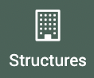
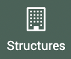

Tutoriel débuts dans EVA
Élaboration de la stratégie
Cette partie s’adresse principalement aux référents EVA.
Les besoins
Lors de la création d’un nouveau compte EVA, il faut déjà avoir une certaine stratégie en place pour bien démarrer dans le logiciel. Il faut définir les objectifs attendus pour le logiciel. Un tableau comme ci-dessous peut être rempli :

D’autres exemples sont disponibles dans le centre de ressources.
Les objectifs sont à définir avec la direction pour s’assurer un portage de l’intégration du logiciel. Ils peuvent être définis avec l’équipe également pour les intégrer au processus.
Il est important d’avoir en tête les objectifs et analyses vers lesquels tendre pour pouvoir déterminer les données à suivre. Cette première étape est importante à formaliser pour tous les paramétrages à effectuer par la suite.
La question des personnes impliquées et de la temporalité permet de concrétiser les objectifs.
La question des pré-requis peut être élaborée avec l’appui de la FPNRF ou du prestataire d’assistance.
Les livrables attendus
On peut également partir des livrables pour se questionner sur les usages souhaités pour EVA : 1. Identifier les exports que l’on souhaite obtenir pour identifier les champs nécessaires : mots clés, référentiels, champs personnalisables, informations nécessaires hors fiches (budget, temps passé, territoire…) Exemples :
Je souhaite exporter mon programme d’actions -> il me faut les données sur le projet (titre, description, livrables…), les données sur le budget prévisionnel, les données sur le temps prévu, les actions sont rattachées au plan de gestion ou à la charte et indique si le projet fait partie d’un Life, se rattache à une zone natura 2000…
Je souhaite exporter mon bilan d’activité -> il me faut les données sur le projet, des bilans d’avancement annuels, le rattachement à la charte ou plan de gestion mais aussi à des thématiques
Je souhaite insérer mes données dans la BD AMP -> il faut que les champs principaux correspondent au même vocabulaire
2. Reprendre un ancien rapport d’évaluation ou bilan pour identifier des clés d’analyse Exemples :
Il y a des analyses par axes de la charte ou par finalité du plan de gestion -> il faut bien rattacher les fiches au référentiel charte ou plan de gestion
Mon rapport d’évaluation est divisé en thématique -> il me faut un mot clé thématique
Il y a une analyse sur le budget par territoire -> il faut insérer les territoires à minima et paramétrer le module budget si possible
Se connecter à EVA
Chaque parc (ou réseau de parc pour les instances nationales) a son propre EVA. L’adresse URL se compose du nom de domaine EVA : evaparc.net et du sous-domaine qui correspond souvent au nom du parc ou son abbréviation.
Exemples :
briere.evaparc.net pour le PNR de Brière
fpnrf.evaparc.net pour la Fédération des PNR
ecrins.evaparc.net pour le PN des Écrins
egmp.evaparc.net pour le PNM de l’estuaire de la Gironde et de la mer des Pertuis
Avec votre navigateur préféré, rendez-vous sur le EVA de votre parc et remplissez vos informations de connexion (un accès par utilisateur).
{kind=link}
Si vous ne possedez pas vos identifiants, demandez à votre référent EVA.
Cliquer sur connexion vous arriverez sur l’accueil de votre EVA.
Changer ses informations
Lors de votre première connexion, il est recommandé de modifier au moins votre mot de passe.
Pour accéder à vos informations, deux solutions :
Par le module Administration > Utilisateurs > Cliquez sur votre profil
En cliquant sur votre profil directement en haut à droite
{kind=link}
Vous pouvez ensuite changer votre mot de passe, sans oublier d’enregistrer les modifications !

Remplissage des données
Pour pouvoir remplir des fiches dans EVA, il faudra avoir renseigné des données dans les différents modules du logiciel.
Les données peuvent être ajoutées dans l’ordre suivant dans EVA :
Créer des rôles qui vont définir les différents niveaux d’accès au logiciel (par exemple : administrateur, rédacteur…). Ces rôles sont à créer avant les utilisateurs. Plus d’infos dans la partie Rôles de cette documentation
Créer des utilisateurs, ces utilisateurs représentent les différents agents du parc. Plus d’infos dans la partie Utilisateurs de cette documentation
Créer des mots-clés et référentiels, ils vont permettre d’associer les fiches et autres données à des mots-clés d’analyse (par exemple : thématique) ou à des cadres comme la charte/plan de gestion. Plus d’infos dans la partie Motsclés et référentiels de cette documentation
- Remplir le module Données en fonction de vos besoins :
L”Annuaire permet de renseigner les structures (les acteurs à rattacher aux fiches et les financeurs à rattacher aux enveloppes) et les contacts. Plus d’infos dans la partie Annuaire de cette documentation
Le module indicateurs permet de renseigner les indicateurs qui pourront ensuite être rattachés ou non aux fiches.
Le module budget permet de renseigner les enveloppes et les comptes qui seront utiles pour ajouter des postes de dépenses et recettes dans les fiches ainsi que les statuts financiers pour qualifier les fiches. Plus d’infos dans la partie Budget de cette documentation
Le module territoire permet de renseigner les périmètres géographique à rattacher aux actions (communes, epci, parc…). Plus d’infos dans la partie Territoires de cette documentation
Note
Les données peuvent être ajoutées une à une en remplissant les formulaires, grâce au bouton rouge en bas à droite (ou au plus en haut), mais si vous avez déjà des listes de données, il est possible de toutes les importer (voir la partie Imports de cette documentation)
Créer des modèles de fiche assez tôt dans le paramétrage du logiciel permet de se poser les questions sur chaque champs à remplir et à simplifier le formulaire de remplissage pour les agents. Plus d’infos dans la partie Modèles de fiches de cette documentation
Paramétrer l”aide au remplissage en parallèle de la création des modèles de fiche permet de concrétiser l’usage des champs. On peut définir des infos-bulles ou des placeholder qui aideront les agents à savoir comment remplir les champs mais on peut également renommer certains champs pour mieux coller au vocabulaire utilisé dans le parc. Plus d’infos dans la partie Traductions de cette documentation
Créer les champs personnalisables si les champs disponibles par défaut dans EVA ne vous suffisent pas, vous pouvez créer d’autres champs (texte, case à cocher…). Il faudra ensuite veiller à les rajouter à vos modèles de fiches. Plus d’infos dans la partie Champs de cette documentation
Création d’une fiche
La création d’une première fiche basée sur un projet existant permettra de vérifier qu’aucune information n’a été oublié (sinon rajouter le champ nécessaire) et que tous les champs paramétrés sont utiles (sinon le masquer dans le modèle de fiche).
Premières étapes :
Dans
 > : Cliquer sur le
> : Cliquer sur le  en bas à droite et sur « Créer une fiche » -> Le formulaire de fiche s’ouvre
en bas à droite et sur « Créer une fiche » -> Le formulaire de fiche s’ouvreIl faut indiquer un titre et ENREGISTRER une première fois pour que toute la fiche apparaisse (les onglets sur le côté et les champs personnalisables n’apparaissent qu’après une première sauvegarde)
{kind=link}
Une fois la fiche enregistrée avec le titre :
Modifier le modèle de fiche en cliquant sur « Modifier le modèle de fiche » en haut à gauche et choisir dans la liste déroulante le modèle voulu.
Remplir les champs de la fiche. Plus d’infos dans la partie Onglet Fiches de cette documentation
Remplir onglet fiche
{kind=link}
Maîtrise d’ouvrage externe : cocher la case permet l’affichage d’un champs pour indiquer le maître d’ouvrage, il changera également le sous-onglet « dépenses » dans l’onglet budget en « dépenses de subventions du parc ». Le champs maître d’ouvrage est relié aux structures de l’annuaire. On peut accéder à la liste en cliquant sur le ou en insérant dans le champs les premières lettres de la structure à rattacher.
Indiquer un statut financier, ces status sont définis dans
 >
>  >
> 
Les codes financiers créés dans l’onglet budget de cette fiche apparaîtront ici. Plus d’infos dans la partie Codes financiers de cette documentation
{kind=link}
{kind=link}
Remplir les champs textes. Pour éviter les bugs lors des exports, il est recommandé de ne pas les mettre en forme (gras, italique…). Attention également lors des copies depuis des documents de ne pas insérer des caractères spéciaux qui causeront également des soucis lors des exports.

Indexer la fiche sur les mots clés et référentiels, en tapant directement dans le champ ou en cliquant qur le . Plus d’infos dans la partie Motsclés et référentiels de cette documentation.
{kind=link}
-> L’onglet Fiche est maintenant rempli, ne pas oublier d’enregistrer avant de passer aux autres onglets
Remplir onglet équipe
Plus d’infos dans la partie Onglet Equipes de cette documentation
Ici seront rattachés tous les membres du projet. Tous les membres (chef de projet, validateur ou membre simple) sont des utilisateurs. Il sont donc à créer dans  >
>  >
>  .
.
Choisir le chef de projet, par défaut, le chef de projet est celui qui créé la fiche, mais il peut être modifié en cliquant que sur le ou en insérant dans le champs les premières lettres de l’utilisateur à sélectionner. Plusieurs chefs de projet peuvent être ajoutés. Ajouter un chef de projet permet de filtrer les fiches sur ce rôle, paramétrer des alertes pour ce rôle… Lorsque la fiche change de statut pour le statut « Validée » (vert), un mail est envoyé au chef de projet de la fiche.
Choisir le validateur, il peut être ajouté en cliquant que sur le ou en insérant dans le champs les premières lettres de l’utilisateur à sélectionner. Plusieurs validateurs peuvent être ajoutés. Ajouter un validateur permet de filtrer les fiches sur ce rôle, paramétrer des alertes pour ce rôle… Lorsque la fiche change de statut pour le statut « À validée » (violet), un mail est envoyé au validateur de la fiche.
Le tableau des membres de l’équipe se remplit automatiquement avec les chefs de projet (indiqué via
 ) et validateurs (indiqué via
) et validateurs (indiqué via  ).
).Ajouter les membres de l’équipe grâce au bouton d’ajout des membres. Une boîte de dialogue s’ouvre pour choisir l’utilisateur.S oit commencez à rentrer le nom du membre, les utilisateurs s’affichent par auto-complétion, choissisez celui qui vous convient. Soit cliquez sur le et cochez les noms qui vous conviennent. N’oubliez pas de cliquer sur ajouter dans cette boîte de dialogue avant de quitter.
Si vous avez paramétré un mot clé rattaché aux « membres » alors lors de l’ajout d’un membre, vous pourrez aussi indiquer un rôle. Attention ce rôle est bien un mot clé et n’est pas relié au « rôle » qui définit les accès. Plus d’infos dans la FAQ sur les rôles. Si le rôle n’est pas défini alors l’utilisateur ajouté sera « membre » par défaut.
{kind=link}
-> L’onglet équipe est maintenant rempli, ne pas oublier d’enregistrer avant de passer aux autres onglets
Remplir onglet personnalisable
Cet onglet peut avoir un nom différent pour chaque parc, car il est modifiable à la demande. Plus d’infos dans la partie Onglet personnalisable de cette documentation.
Cet onglet permet d’ajouter des champs supplémentaires pour ajouter des données que vous n’avez pas pu ajouter autre part dans le logiciel. Par exemple, si vous avez une fiche pluri-annuel vous pouvez créer des champs personnalisables pour les bilans de chaque année.
Les champs personnalisables sont à créer dans > et il faut ensuite les rajouter au modèle de fiche souhaité. Plus d’infos dans la partie Champs de cette documentation.
{kind=link}
-> Un fois l’onglet champs personnalisable rempli, ne pas oublier d’enregistrer avant de passer aux autres onglets
Remplir onglet acteurs
Plus d’infos dans la partie Onglet acteurs de cette documentation.
Cliquez sur
 pour ajouter une structure. Une boîte de dialogue s’ouvre pour choisir la structure. Soit commencez à rentrer le nom de la structure, les structures s’affichent par auto-complétion, choissisez celle qui vous convient. Soit cliquez sur le et cochez le nom qui vous convient. N’oubliez pas d’enregistrer cette boîte de dialogue avant de quitter. Les mots clés associés aux acteurs (et non aux structures) peuvent être ajoutés via cette boîte de dialogue.
pour ajouter une structure. Une boîte de dialogue s’ouvre pour choisir la structure. Soit commencez à rentrer le nom de la structure, les structures s’affichent par auto-complétion, choissisez celle qui vous convient. Soit cliquez sur le et cochez le nom qui vous convient. N’oubliez pas d’enregistrer cette boîte de dialogue avant de quitter. Les mots clés associés aux acteurs (et non aux structures) peuvent être ajoutés via cette boîte de dialogue.
Les acteurs sont donc à remplir dans l’annuaire, dans la partie structure : >  > .
> .
{kind=link}
{kind=link}
Pour les prochains onglets, la documentation sur le module fiche est plus complète sur le sujet.
Remplir onglet territoires
Plus d’infos dans la partie Onglet territoires de cette documentation.
Cet onglet permet de rattacher des territoires à la fiche. Ces territoires peuvent être renseignés dans le module >  .
.
Soit commencez à rentrer le nom du territoire, les territoires s’affichent par auto-complétion, choissisez celui qui vous convient.
Soit cliquez sur le , rentrer les premières lettres et cliquer sur la
 , puis choissisez le(s) territoire(s).
, puis choissisez le(s) territoire(s).Soit cliquez sur le , puis les traits pour afficher l’ensemble des territoires (attention cela peut prendre du temps).
N’oubliez pas de cliquer sur sélectionner dans cette boîte de dialogue avant de quitter.
La carte affiche les différents territoires associés à la fiche.
{kind=link}
-> Un fois l’onglet territoire rempli, ne pas oublier d’enregistrer avant de passer aux autres onglets
Remplir onglet temps
Plus d’infos dans la partie Onglet temps de cette documentation.
Le premier sous-onglet est l’onglet synthèse qui reprend les données des autres sous-onglets ainsi que le temps total prévu dans la partie principale de la fiche.

Pour remplir les temps passés, il est plus facile de paramétrer des synchronisations via le module temps, mais il est aussi possible de venir remplir les temps dans chaque fiche.
En cliquant sur le bouton de création de la feuille de temps dans les onglets temps passé et temps prévu, le formulaire s’affiche, il faudra obligatoirement associer la feuille de temps avec un utilisateur, lui donner un début et une fin ainsi qu’une durée.

Remplir onglet budget
Plus d’infos dans la partie Onglet budget de cette documentation.
L’onglet budget est divisé en trois sous-onglets : dépenses, recettes et codes financiers.
Il faut avoir défini des comptes de dépenses et de recettes en amont dans le module > >  ainsi que des enveloppes pour les recettes dans > >
ainsi que des enveloppes pour les recettes dans > >  .
.
Pour remplir le budget, il faudra d’abord créer un poste de dépense ou de recette puis cliquer sur le plus en fin de ligne pour ajouter la dépense ou la recette.
Pour le budget, il est possible d’importer de nombreuses lignes budgétaires comme expliqué dans la partie import budget de cette documentation. Certains logiciels de comptablitité sont aussi reliés automatiquement.
Autres onglets
Les onglets : Conventions, Avancement et Tâches sont moins utilisés, ils sont décrits dans la partie Remplissage de fiche
Avertissement
Penser à bien ENREGISTRER à chaque modification, si on change de fenêtre sans avoir enregistré on perd les modifications effectuées.
Une fois les paramétrages réalisés et la première fiche remplie de manière satisfaisante, réaliser un mode d’emploi pour le remplissage de vos fiches à l’attention des agents du parc. Des exemples sont disponibles dans le centre de ressources.